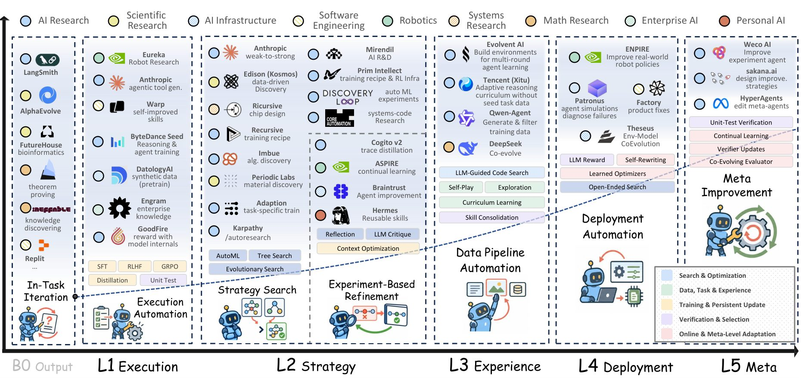
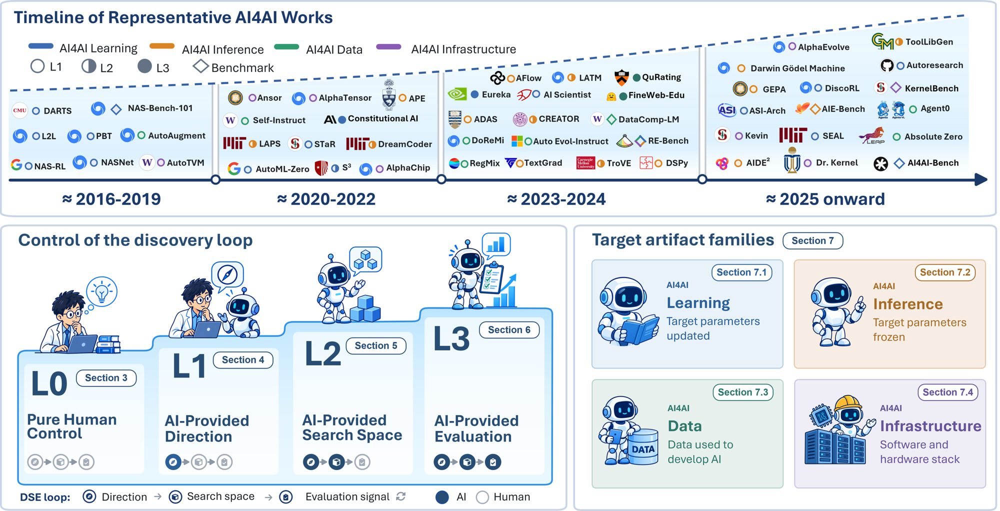

RSI · Recursive Self-Improvement
AI helps AI do R&D. Who verifies it?
Signals · Definition · Landscape · Validation · Judgment and adoption · 2026-11 · about 35 minutes
What to say
Today I'll talk about something already happening: AI is helping build the next generation of AI. I'll cover four things, and end with three questions you can take back and use right away.
Pause
Pause after reading the subtitle "Who verifies?" This is the main question of the whole talk.
Red lines
Don't open with “intelligence explosion” or “superintelligence”; it's easy to be dismissed as hype.
Five things today
What happened
Labs, capital, startups
What counts as RSI
Authoritative definition, five levels of autonomy, who makes the call
The big business picture
Six capabilities, where each framework stands, AlphaEvolve
Who verifies?
Noise, budget, gaming; where the money goes
Assessment and execution
Demo, competition, assessment, and three questions to ask customers
What to say
The first two are "what it is", the third is "who's doing what", and the last two are "how we use it".
Possible issues
“How is this different from the previous 7-slide deck?” — Stricter definitions, plus a business big picture and validation methods.
“AI helping build AI” is now publicly acknowledged
The three labs are heading in the same direction, just at different speeds; most key evidence isn't public (most of METR's evaluation is redacted).
What to say
Start with the number most relevant to the audience. For AWS colleagues, use Recursive's 410 million: the most-watched RSI startup, with its research loop running on AWS.
Pause
Pause when you reach “88% still need human guidance”: the speedup is real, but full automation isn't here yet.
Possible issues
“How was 2x calculated?” — METR spent nearly three months on-site reviewing internal data. Uncertainty is high; the true value is between 1.3x and 3x.
Red lines
Don't say “RSI has been achieved.”
Follow the compute money
See liucao.me/rsi/capital/ for details
What to say
Why look at private markets: not to judge the technology, but to see where money and compute are flowing — funding rounds turn into cloud contracts a few months later.
Possible issues
“Why is Google ahead?” — At seed / Series A it offers “equity + cloud deal + latest chips” together. But GV invested in Recursive while the compute went to AWS, so equity doesn't guarantee the cloud deal.
Red lines
No comment on whether any company's valuation is high or low.
RSI startups: funding is concentrated, and most have no revenue yet
| Company | Founder background | Funding (disclosed) | Primary compute |
|---|---|---|---|
| Recursive | Socher, Yuandong Tian, Clune et al. | $650M · valued at $4.65B | AWS (410 million) |
| Mirendil | Former Anthropic researcher | Seed 200M + Series A 1B | Google Cloud |
| Discovery Loop | Jeff Dean et al. | Reportedly in talks at a valuation of about 50 billion | Google (reported) |
| Ineffable | David Silver | Seed 1.1B · valuation 5.1B (two-tier pricing) | Google Cloud |
| Core Automation | Former OpenAI researcher | Form D: $432M sold | Nebius |
| China: Chaoyan, Super Evolution, Boundless Evolution | Young researchers | Angel / Pre-A, hundreds of millions of RMB, mostly state-backed capital | Undisclosed |
Sources: company announcements, TechCrunch, Bloomberg, BI, Forbes, Securities Times, etc.; most valuations are as reported.
What to say
$200M to $1.1B per round, with teams of only 10–30 people — the money mostly buys compute, not people (Recursive CEO: "count agents, not headcount").
Possible issues
“Who's most likely to make money first?” — Those selling open models, optimization services, or sandboxes and evaluation; chips / kernels have the most rigorous evaluation.
Red lines
Don't say any company “will definitely succeed.”
Authoritative definition: able to build its own successor fully autonomously
Anthropic Institute · When AI builds itself (originally in English; translated here)
What to say
Use the frontier labs' own definition, not mine. Note its two key terms: “fully autonomous” and “successor”.
Pause
Pause after reading "We're not there yet."
Possible issues
“What about last time's ‘if the target of improvement is itself, it's RSI’?” — That's a necessary condition, not a sufficient one. Covered on the next slide.
Iteration alone is not RSI

- Evolution: this run's output got better
- Self-evolving: accepted improvements are kept and reused next time
- Meta-evolution: "how to improve" is itself changing
- RSI: improvements carry over across rounds and make later improvements better
Figure source: Li, Chen et al. (HIT Shenzhen, HKU, NUS), "Towards AI That Improves Itself: A Survey of RSI", Figure 3; copyright belongs to the original authors.
What to say
The key is the line at the bottom of the figure: "Iteration alone is not RSI; accepted improvements must be carried into subsequent improvement cycles."
Pause
Point to the four stages, go from left to right, and stop at the "RSI" box.
Possible issues
“Does automatic prompt optimization count?” — Generally it sits at “evolution” or “self-evolution,” not RSI.
In "AI for X": X = AI itself, and it's a multiplier

- AI for Science / Math / Code improves external problems
- AI for AI It changes the work of building AI itself
- The loop closes: better AI → more "R&D labor" → better AI
- So it amplifies every other X
Figure source: Chan, Pachocki, Hinton, Horvitz, Bengio, Clark, Clune et al., "What if automating AI R&D triggers an intelligence explosion?", Figure 2, CC BY 4.0.
What to say
“Improves & Multiplies” on the arrow means it acts as a multiplier. The paper's authors include OpenAI's chief scientist, Hinton, Bengio, and Microsoft's Horvitz.
Possible issues
“Will it accelerate without limit?” — The paper also lists four frictions: diminishing returns, compute and data, hard-to-automate tasks, and time-consuming processes.
Red lines
Don't draw a “will happen” conclusion on the paper's behalf; it says “may.”
Five levels of autonomy: today's products stop at L2

L1 Execution → L2 Strategy (AI picks the change; humans set goals and acceptance) → L3 Experience → L4 Deployment → L5 Meta-improvement. Source: Tang, Zhou et al., “The Last AI Built by Humans,” Figure 1, CC BY-NC-ND 4.0. Note: in the figure, AlphaEvolve is at B0 (iterates only within a single task).
What to say
All three clouds' agent optimizers are at L2: humans set goals and scoring, AI picks the changes. No one has reached L5.
Pause
Point out that AlphaEvolve is at B0: it changes your code, not itself. Many people find this surprising.
Possible issues
“So AlphaEvolve isn't RSI?” — Not by itself. Using it to improve the AI's own components, and carrying the results into the next round, is what moves it toward RSI.
AI4AI: look at which decisions AI makes

- L1: AI sets the direction (where to search)
- L2: AI sets the space (what can be changed)
- L3: AI sets the evaluation (what counts as good)
- FunSearch and AlphaEvolve are only L1; Eureka and Constitutional AI are L3, but L3 ≠ fully autonomous
- How to tell:counterfactual test— Swap out the AI part: does the result change?
Figure source: Liu, Wang, Hu et al. (Nankai University, Zhongguancun Academy, Xi'an Jiaotong University, et al.), "AI4AI: Toward AI-discovered Superintelligence", Figure 1. Commentary at liucao.me/rsi/ai4ai/
What to say
This yardstick measures “where control comes from,” not capability. Many systems that look highly automated still leave the key decisions in human hands.
Possible issues
“Does this conflict with the five-level autonomy chart?” — No. Two yardsticks: one looks at who makes the decisions, the other at degree of autonomy.
A self-improving system = six business capabilities
Define goals and evaluation
What counts as done, what counts as better
Define what can be changed
Code blocks, prompts, skills
Generate and select changes
proposer + search algorithm
Execution
Single agent or multi-agent team
Evaluation and promotion gates
Prove it's actually better
Deployment and governance
Approval, A/B, rollback
What to say
This is a general business architecture diagram that any self-improving system can fit into. 1, 2, and 3 map to the paper's three decisions; 4, 5, and 6 are engineering must-haves.
Pause
Pause at block 5: we'll keep coming back to it.
Possible issues
“How do the AI4AI levels differ from the five levels on the previous slide?” — The former looks at where control comes from, the latter at degree of autonomy. Two different yardsticks.
Different schools sit in different cells
| School (representatives) | The core is | Approach |
|---|---|---|
| Evolution engines (AlphaEvolve, OpenEvolve, ShinkaEvolve) | ③ | Editable code + scoring function, large-scale search; evaluation left to the user |
| Self-modifying agents (DGM, HyperAgents, STOP) | ②③ | The agent modifies its own code; a few also modify the “improver” itself |
| Prompt and workflow optimization (DSPy, GEPA, AFlow) | ③ | Treat prompts and workflows as parameters; pick candidates with a validation set |
| Cloud-provider managed (AgentCore, Foundry) | ③⑤⑥ | Refine from production trajectories, with a focus on safe rollout |
| Multi-agent software development (MetaGPT, Cursor, Claude Code teams) | ④ | Agents split the work to build software; the team doesn't improve itself |
| Argus (prototype) | ④⑤⑥ | Borrow the engine; build your own gates + isolation + replay |
For the full framework-by-framework comparison (20+ frameworks), see liucao.me/rsi/argus/. Capability labels are based on a 2026-11-18 review of official repos and docs.
What to say
In short:③ most crowded, ⑤ scarcest. Most frameworks optimize for “the score you give them.”
Possible issues
“Which open-source engines can be used directly?” — OpenEvolve, ShinkaEvolve, GEPA, and DSPy all have permissive licenses; HyperAgents can't be used commercially, and autoresearch has no license.
Red lines
“None” in the table mostly means “not mentioned in the docs”. Don't claim others definitely lack it.
AlphaEvolve: the most mature “evolutionary coding agent”

- You provide seed code + a scoring function; Gemini Flash casts a wide net, Pro digs deep
- Google itself: Borg reclaimed 0.7% compute; Gemini training 1% faster
- 4×4 complex matrix multiplication 48 multiplications, the first improvement in 56 years
- Enterprise: BASF 80%+ relative accuracy improvement; FM Logistic routing 10.4%
- 2026-07 Google Cloud GA; it is itself L1 / B0, not RSI
Figure source: Novikov et al., AlphaEvolve white paper, Figure 2 (arXiv 2506.13131, CC BY-NC-ND 4.0); customer figures are as published by Google and the customers themselves. Details at liucao.me/rsi/alphaevolve/
What to say
It shows the division of labor in the overall business picture: generation happens in the cloud (③), evaluation runs on your side — "AlphaEvolve doesn't run your code."
Possible issues
“How does AWS compare?” — Open-source OpenEvolve / ShinkaEvolve + Bedrock + Batch gives the same structure.
Red lines
Customer results are self-reported success stories and carry survivorship bias.
“Got better” has to pass three checks
Not luck
Run the baseline several times to get the noise range; the gain must exceed the noise (paired bootstrap)
Not spending more
Given the same budget for the original system (e.g., best of several tries), the new version must still be better
Not gaming the system
A held-out set the optimization process has never seen; check regressions case by case; final human review
What to say
This answers the talk's central question: “Who verifies?” All three gates are required.
Pause
Pause when telling the “skip rendering” example; it usually gets a laugh.
Possible issues
“Who has the most complete offering?” — In our research, only AgentCore explicitly states it reports statistical significance + requires human approval for each change; no one uses a “budget-matched baseline” as a gate.
The expensive part isn't “changing,” it's “verifying”
Estimate assumptions: 72 runs × 3.77M tokens, Sonnet 5 pricing on Bedrock (2026-09 pricing). This is a single estimate, not an industry statistic.
What to say
The call that modifies the harness costs pennies; the bulk of the cost is running every candidate on the full task set.
Possible issues
“Is it worth it for the customer?” — Gains are percentages, costs are absolute; it's only worth it if baseline spend is large enough. The last slide gives the formula.
Red lines
Don't treat $856 as a general quote.
Freeze the weights and let the model rewrite only its own search code
Gen 0 · BM25
NDCG@5 = 0.42
Gen 1 · LLM reranking
NDCG@5 = 0.94
Gen 2 · add CoT
NDCG@5 = 0.93(didn't pass the promotion gate)
What to say
The point isn't 0.94. It's that Gen 2 scored about the same yet wasn't accepted: the promotion gate is working.
Pause
Open the replay and walk through one generation's "mutation → evaluation → promotion gate". Have a screen recording ready as a backup.
Red lines
Don't describe this demo as “RSI already works.”
All three clouds are working on “agents that improve automatically”
Who's strong at what
- Google: AlphaEvolve is GA, managed algorithm discovery; the only one of the three that has it
- Microsoft: Foundry Agent Optimizer, the most detailed closed-loop reference architecture
- AWS: AgentCore optimization + Evaluations, reports statistical significance, human approval for each change; Recursive runs on AWS
Where Argus fits
- Not building models, not rebuilding the evolution engine (borrowing OpenEvolve / Shinka)
- Own ④ execution, ⑤ gating, ⑥ deployment + isolation + replay
- Top right: the system improves itself and verification is strict — mostly empty for now
What to say
To be frank, Google leads in managed algorithm discovery; our strength is in the verification and deployment stages.
Possible issues
“Does AWS have an AlphaEvolve equivalent?” — Not as a managed service in public materials, but you can build the same structure with an open-source engine + Bedrock + Batch.
Red lines
No customer names or internal information.
After reviewing this material, five predictions
- Value shifts to the evaluator: Models and engines can be swapped; what can't be swapped is the customer's evaluators, held-out sets and trajectories
- Evaluation costs rise as optimization capability grows: Goodhart turns evaluation into an arms race
- The shape of compute is changing: from the big peaks of training to the high-frequency long tail of evaluation (short, parallel, needs isolation)
- Deployment order is determined by verification cost: simulators and digital twins are prerequisites
- Platform competition is about "auditable changes" and neutrality, not in the engine
Personal views. For each point's mechanism, evidence, and “when I'd be wrong,” see liucao.me/rsi/view/
What to say
Core thesis: RSI changes the cost structure of “improvement”. It used to be limited by experts; now it is limited by evaluator quality and evaluation compute.
Possible issues
“Which point is most likely wrong?” — If reliable learned verifiers appear, points one through three all need revising.
Red lines
Say explicitly that this is a personal view, not the company's position.
My bets for 2027-11
What to say
Give the audience something they can come back and check against. The probabilities are subjective, but the resolution criteria are fixed.
Possible issues
“Why only 10% for legislation?” — There are plenty of proposals, but the bar for passing both chambers and getting signed is high.
When meeting customers, ask three questions first
Can it be scored automatically?
Are there tests, benchmarks, business metrics?
Is there a held-out set?
Problems the optimization process has never seen
Who reviews before launch?
Can it be rolled back?
What to say
None of the three: help the customer with evaluation first, and don't talk about self-evolution. One: do a small PoC. All three: deploy an automated optimization loop.
Possible issues
“Best-fit scenarios?” — Anything with simulation or backtesting: supply chain, routing, scheduling, performance optimization. The public cases (BASF, FM Logistic, Kinaxis) all fall here.
Red lines
Don't pitch customers with the term "RSI"; say "automated optimization + evaluation loop" instead.
Four things to remember
- RSI is already happening, but what enterprises can use today is Frozen model, auto-modified harness(L1–L2)
- Iteration alone is not RSI: improvements must Carry it into the next round, and make the improver stronger
- Generation is no longer scarce,Trustworthy evals is what's scarce (③ crowded, ⑤ scarce)
- With customers, ask first: Can it be scored? Is there a held-out set? Who reviews?
Can self-improve ≠ Can self-verify
What to say
Bring it back to the main question of the talk: athletes can train themselves, but they can't be their own referee.
Thank you. Questions welcome
Handouts and materials:RSI Resources · RSI Landscape · The big business picture · My take · AI4AI explained · AlphaEvolve Explained
Personal views, not representing any employer's position; all data comes from public sources, cited on each page.
FAQ prep
- Could RSI get out of control? Covers OpenAI's position and regulatory proposals, without drawing conclusions.
- How is this different from automatic prompt optimization? — Go back to the four stages on page 5.
- How to build it on AWS: open-source engines + Bedrock + Batch / AgentCore + Evaluations.